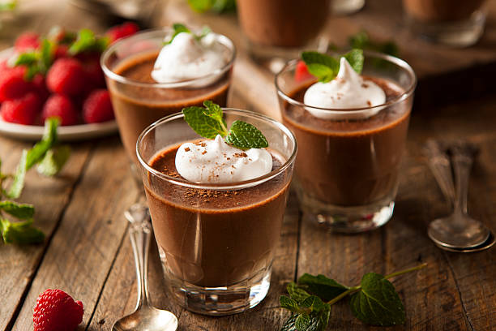

Home
Chocolate Mousse

Description
This easy chocolate mousse recipe is made in a blender with just three ingredients. It's light, fluffy, and very tasty!.
ingredients:
- 1 cup semisweet chocolate chips
- tablespoons boiling water
- 4 large eggs, separated, divided
Steps:
- Place chocolate chips in a blender; pulse until ground. Add boiling water and blend until chocolate is melted. Add egg yolks, one at a time, blending well after each addition; transfer to a mixing bowl.
- Beat egg whites in a glass, metal, or ceramic bowl until stiff peaks form. Gently fold egg whites into chocolate mixture. Pour mousse into wine glasses or other serving glasses and chill in the refrigerator until set, 2 to 3 hours.